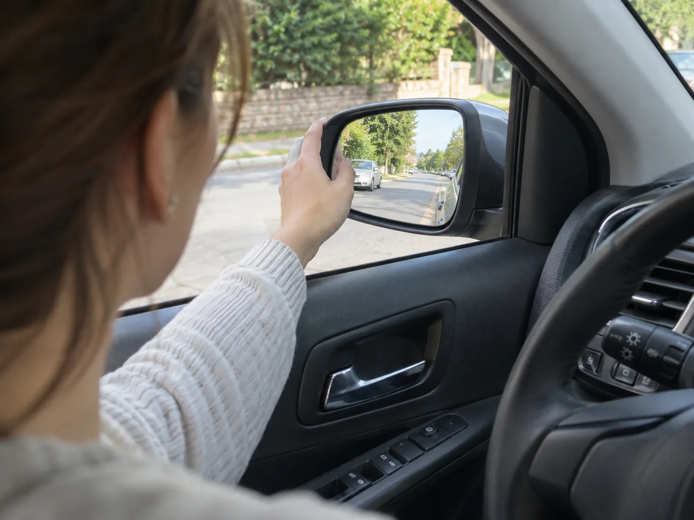

▲ 주차 감각은 타고나는 게 아니라 라바콘 몇 개로도 충분히 훈련할 수 있다.
먼저 3줄 요약
- 초보운전자(면허 1년 미만) 사고율은 경력 7년 이상 운전자보다 1.7~2.1배 높고, 첫해 사고의 41%가 운전 시작 100일 안에 몰려 있다. 주차장·골목에서 나는 측면충돌 비중이 특히 높다.
- 주차 감각은 타고나는 재능이 아니라 '기준점을 몇 개 외우느냐'의 문제다. 사이드미러 조정법, 차폭 감각, 후방 기준점, 평행주차를 순서대로 익히면 4주 안에 실전 감각이 붙는다.
- 성별은 주차 실력과 통계적 인과관계가 없다. '김여사' 같은 낙인은 편견일 뿐이고, 실제로는 누구나 첫 100일을 어떻게 보내느냐가 관건이다.
운전면허를 따고 나면 다들 고속도로 합류나 좌회전을 가장 무서워할 것 같지만, 실제로 초보 운전자들이 가장 많이 피하는 상황은 '주차'다. 후진하다 옆 차를 긁을까봐, 평행주차 줄에서 뒤차가 기다릴까봐 아예 먼 곳에 세워두고 걸어가는 사람도 적지 않다. 이런 '주차 트라우마'는 의지의 문제가 아니라 기준점을 배운 적이 없어서 생기는 경우가 대부분이다. 실제 운전 강사들이 가르치는 방식대로, 1주차 차폭 감각부터 4주차 실전 적용까지 단계별 훈련 프로그램으로 정리했다.
왜 하필 '주차'에서 막히는가 — 숫자로 보는 초보운전자 사고
현대해상 교통기후환경연구소가 2009~2015년 사고 데이터 317만 4092건을 분석한 연구에 따르면, 면허 취득 1년 미만인 초보운전자의 사고율은 경력 7년 이상 운전자보다 1.7~2.1배 높았다. 더 눈여겨볼 대목은 시점이다. 초보운전자가 첫해에 낸 사고 중 30일 이내가 16%, 100일 이내가 41%를 차지했다. 운전을 시작한 지 석 달 안에 사고의 절반 가까이가 몰려 있다는 뜻이다.
사고 유형에서도 단서가 나온다. 초보운전자는 특히 측면충돌사고 비중이 높게 나타났는데, 연구진은 이를 좁은 시야 폭 탓으로 분석했다. 고속 주행 중 정면 충돌보다, 저속으로 움직이며 옆이나 뒤를 확인해야 하는 주차·골목 상황에서 사각지대에 취약하다는 의미다. 한편 '김여사'처럼 성별을 사고 원인으로 몰아가는 인식은 통계적 근거가 없는 편견에 가깝다. 사고율을 가르는 건 성별이 아니라 운전 경력과 훈련량이다. 이 훈련 프로그램도 성별과 무관하게 면허를 갓 딴 모든 초보 운전자를 대상으로 한다.
관련 통계 원문은 아래에서 확인 가능하다. 초보운전자 사고 통계 기사 바로가기

▲ 주차 훈련의 첫 단계는 핸들을 돌리기 전, 정차 상태에서 사이드미러 각도부터 맞추는 것이다.
1주차: 차폭 감각 익히기 — 핸들을 잡기 전에 거울부터
주차 훈련의 출발점은 역설적으로 '주차 연습'이 아니라 사이드미러 조정이다. 많은 초보 운전자가 미러를 '하늘과 도로 1:1' 비율로 맞추는데, 이러면 정작 확인해야 할 도로 정보보다 불필요한 하늘 풍경을 더 많이 보게 된다. 불스원 블로그가 제시하는 공식은 상하는 지평선이 거울 중앙(1/2 지점)에 오도록, 좌우는 내 차체가 거울 면적의 약 1/5 정도만 보이도록 맞추는 것이다. 이렇게 하면 도로 상황과 옆 차선의 다른 차량 움직임을 더 넓게 확인할 수 있다. 미러 조정은 반드시 시트 포지션을 먼저 잡고 등받이에 편하게 기댄 뒤, 정차 상태에서만 해야 한다.
미러를 맞췄다면 이번 주는 여기까지다. 주행 없이 정차된 차 안에서 사이드미러·룸미러에 비치는 범위와 실제 차체 폭의 차이를 눈으로 익히는 것만으로도 충분하다. 조수석에 페트병이나 원뿔형 표식을 놓고 창밖 실제 거리와 미러 속 거리를 비교해보면 감이 훨씬 빨리 잡힌다. 이 단계에서 '내 차가 어디까지 차지하는지'에 대한 감각을 몸에 새겨두면 이후 단계가 수월해진다.
사이드미러 조정 공식 원문은 아래에서 확인 가능하다. 불스원 블로그 사이드미러 가이드 바로가기
2주차: 후방 주차 기준점 훈련 — 감이 아니라 '지점'을 외운다
2주차부터는 사람과 차가 적은 넓은 공영주차장이나 연습장을 찾아야 한다. 실전 도로가 아니라 빈 칸이 많은 공간에서 라바콘이나 페트병으로 옆 차량 위치를 표시해두고 반복 연습하는 것이 핵심이다. 후방 주차의 기준점은 이렇게 잡는다. 먼저 오른쪽(또는 왼쪽) 사이드미러로 주차 칸의 앞쪽 모서리와 내 차 뒷범퍼가 겹치는 지점을 확인하고 정지한다. 이후 기어를 후진(R)에 놓고 핸들을 주차 공간 쪽으로 끝까지 돌린 뒤 천천히 후진하면서, 사이드미러로 옆 차와의 간격을 계속 확인한다.
중요한 건 '이번엔 감으로', '저번엔 대충'처럼 매번 다르게 시도하지 않는 것이다. 내 차만의 기준점을 하나로 통일해야 한다. 예를 들어 후진 주차 시 내 차 뒷문 손잡이가 옆 차량의 번호판 위치와 나란해지는 순간 핸들을 천천히 꺾는 식으로 정해두면, 같은 주차장이 아니더라도 비슷한 구조에서 반복 재현이 가능해진다. 오른쪽 사이드미러를 살짝 아래로 내리면 뒷바퀴와 연석 사이 거리까지 눈으로 확인할 수 있어 훨씬 안전하다. 이 단계는 최소 1주, 하루 20~30분씩 10회 이상 반복하는 것을 목표로 잡는다.
▲ 기준점이 헷갈릴 때는 창문을 내리고 직접 눈으로 주차선과 연석 위치를 재확인하는 습관을 들이면 좋다.
3주차: 평행주차 3단계 — 45도가 전부다
차폭 감각과 후방 기준점이 손에 익었다면 3주차는 평행주차다. 평행주차는 복잡해 보이지만 실제로는 3단계 공식으로 정리된다.
1단계, 위치 잡기: 주차하려는 공간 앞에 세워진 차량과 0.5~1m 간격을 두고 나란히 정차한다. 내 차 뒷범퍼와 옆 차 뒷범퍼가 일직선이 되거나, 운전자 어깨가 옆 차 뒷좌석 창문 끝부분에 오면 적절한 위치다. 2단계, 45도 각도 만들기: 후진 기어를 넣고 핸들을 주차 방향(보통 오른쪽)으로 끝까지 돌린 뒤 천천히 후진한다. 왼쪽 사이드미러로 뒤에 주차된 차량의 번호판이나 헤드라이트가 온전히 보이는 순간 멈추면, 내 차가 도로와 약 45도 각도를 이뤘다는 신호다. 3단계, 직선 후진: 45도가 만들어졌다면 핸들을 정중앙(11자)으로 되돌리고 그대로 일직선으로 후진해 들어간다.
이 3단계는 한 번에 완벽하게 되지 않는다. 처음엔 각도를 놓쳐 다시 앞으로 빼고 재시도하는 게 당연하다. 중요한 건 '넣다 뺐다'를 반복하며 창피해하지 않는 것이다. 뒤차가 기다린다는 압박감에 서두르다 접촉사고로 이어지는 경우가 오히려 더 많다. 연습 단계에서는 뒤차 없는 한산한 도로나 연습장에서 각도 감각을 몸에 완전히 익힌 뒤 실전 도로로 넘어가야 한다.
평행주차 3단계 공식 전체는 아래에서 확인 가능하다. 평행주차 3단계 가이드 바로가기
▲ 평행주차는 감이 아니라 '45도가 되는 순간을 알아채는 것'이 전부다.
4주차: 실전 적용 — 마트·회사·아파트 지하주차장으로
마지막 주차는 연습장을 벗어나 실제 생활 동선으로 옮기는 단계다. 처음부터 사람 많은 백화점 지하 주차장으로 갈 필요는 없다. 평일 오전처럼 차량이 적은 시간대에 자주 가는 마트나 회사 주차장부터 시작해, 익숙해지면 혼잡한 시간대·좁은 통로가 있는 아파트 지하주차장 순으로 난도를 높인다.
실전에서 가장 많이 흔들리는 순간은 '뒤에서 다른 차가 기다릴 때'다. 이럴 때는 비상등을 켜고 손을 들어 양해를 구한 뒤 평소 속도로 천천히 진행하는 게 오히려 안전하다. 서두르다 각도를 놓치면 두세 번 더 반복해야 해서 시간이 더 걸린다. 또한 3주차까지 익힌 기준점(사이드미러 비율, 뒷문 손잡이-번호판 정렬, 45도 지점)은 차종이 바뀌어도 원리 자체는 동일하게 적용되므로, 렌터카나 다른 차를 몰게 되더라도 같은 순서로 되짚으면 된다.
4주 동안 반복한 감각은 이후 자연스럽게 몸에 남는다. 처음엔 주차장 입구에서부터 긴장했던 사람도, 기준점 몇 개를 확실히 외우고 나면 '어디에 세울지'보다 '언제 들어갈지'를 고민하는 여유가 생긴다. 주차는 재능이 아니라 반복과 기준점의 문제라는 사실을 몸으로 확인하는 것이 이 4주 프로그램의 목표다.